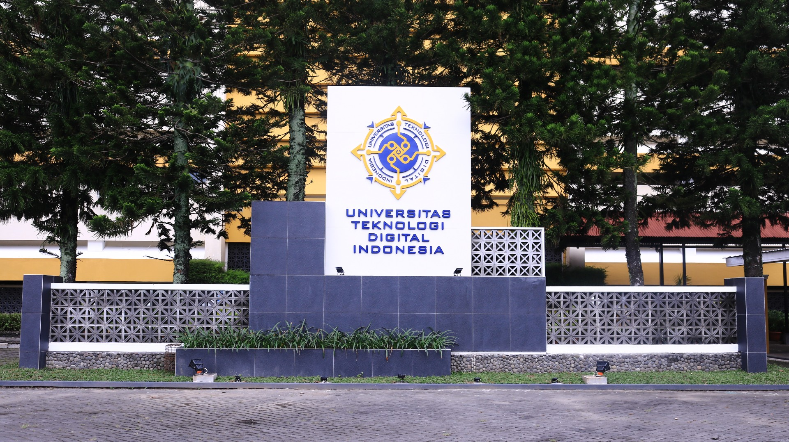

"Universitas Teknologi Digital Indonesia (UTDI) adalah perguruan tinggi swasta di D. I. Yogyakarta yang merupakan perubahan bentuk dari STMIK Akakom. Sejarah berdirinya UTDI dimulai dari Akademi Aplikasi Komputer (AKAKOM) tahun 1979, lalu berkembang menjadi AMIK Akakom pada tahun 1985, selanjutnya menjadi STMIK Akakom pada tahun 1992, dan sekarang menjadi UTDI mulai tahun 2021. UTDI dari awal berdirinya telah menghasilkan banyak lulusan yang berkontribusi di berbagai bidang. Saat ini, UTDI memiliki 9 program studi, yaitu : S2-Teknologi Informasi, S1-Informatika, S1-Sistem Informasi, S1-Teknik Komputer, S1-Manajemen Ritel, S1-Bisnis Digital, D3-Rekayasa Perangkat Lunak Aplikasi, D3-Teknologi Komputer & D3 Sistem Informasi Akuntansi."
